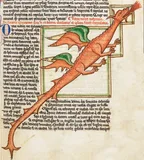
Dragon occidentalwiki-fr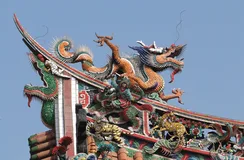
Dragon chinoiswiki-fr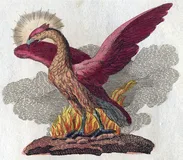
Phénixwiki-fr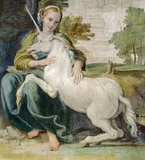
Licornewiki-fr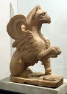
Griffonwiki-fr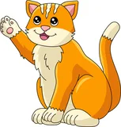
Krakenbing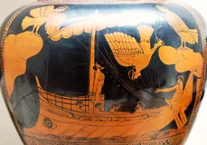
Sirènewiki-fr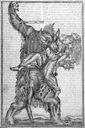
Loup Garouwiki-fr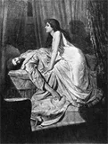
Vampirewiki-fr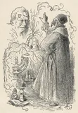
Golemwiki-fr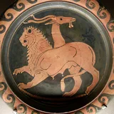
Chimèrewiki-fr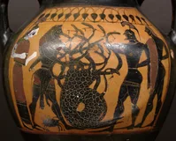
Hydre de Lernewiki-fr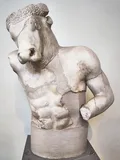
Minotaurewiki-fr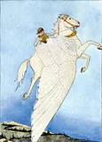
Pégasewiki-fr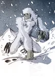
Yétiwiki-fr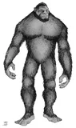
Bigfootwiki-fr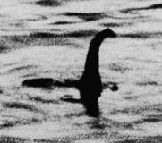
Monstre du loch Nesswiki-fr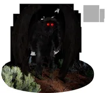
Mothmanwiki-fr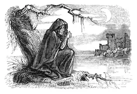
Bansheewiki-fr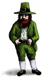
Leprechaunwiki-fr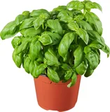
Basilicbing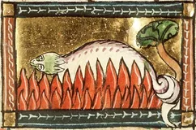
Salamandre elementairewiki-fr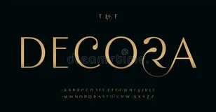
Rocbing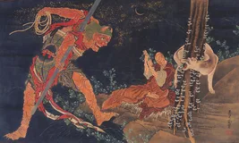
Oniwiki-fr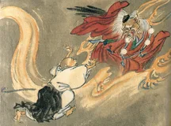
Tenguwiki-fr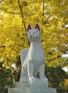
Kitsunewiki-fr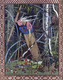
Baba Yagawiki-fr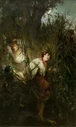
Rusalkawiki-fr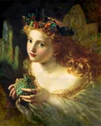
Féewiki-fr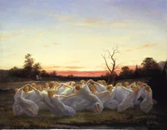
Elfewiki-fr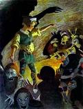
Gobelinwiki-fr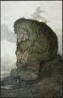
Troll scandinavewiki-fr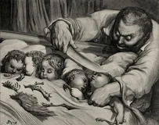
Ogrewiki-fr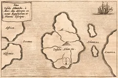
Atlantidewiki-fr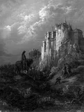
Camelotwiki-fr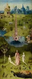
Jardin d'Édenwiki-fr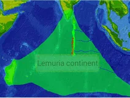
Lémuriewiki-fr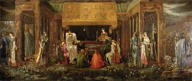
Avalonwiki-fr